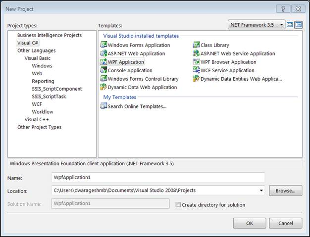
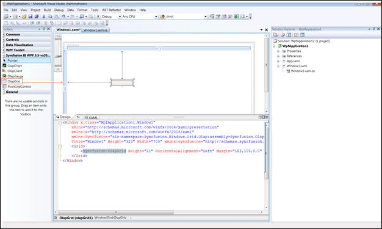
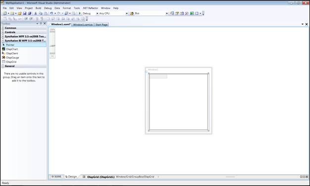
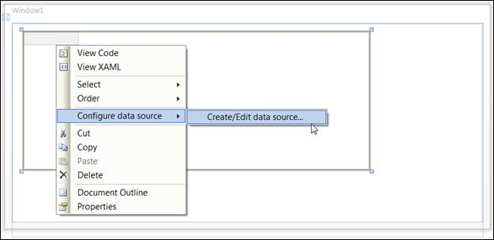
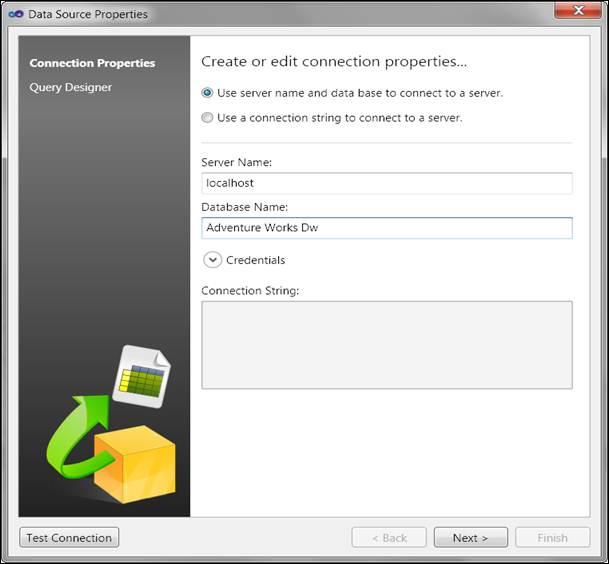
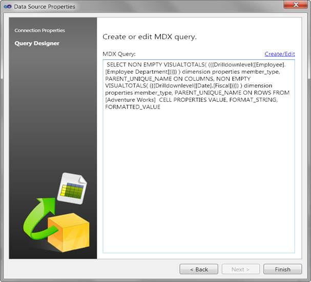
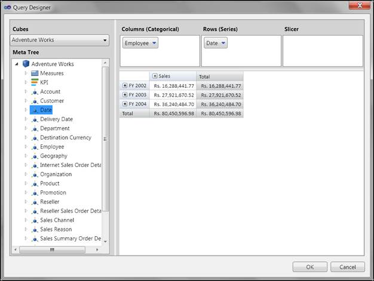
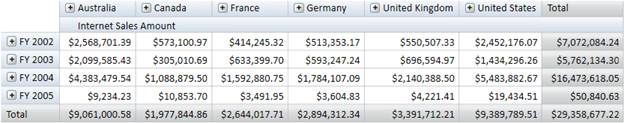

To get started:
1. Click the Start menu, and then click Microsoft Visual Studio 2008.
2. On the File menu, click New Project. The New Project dialog box appears as follows.

Figure 4: New Project Dialog Box
3. Select WPF Application and click OK.
4. Drag the OlapGrid control from the Syncfusion BI WPF Toolbox onto the Design page.

Figure 5: OlapGrid in XAML page

Figure 6: OlapGrid Appearance in Design page
5. Add the following namespace in the code-behind part:
· Syncfusion.Windows.Grid.Olap
· Syncfusion.Olap.Manager
· Syncfusion.Olap.Reports
· Syncfusion.Olap.Engine
6. Data Binding to OlapGrid:
OlapGrid requires OlapDataManager in order to fetch data from OLAP Server. The OlapDataManager should be either instantiated with Connection String or AdomdDataProvider so as to establish connection with the server.
For creating reports we have a report object called OlapReport. OlapReport contains Categorical Items, Series Items, Slicer Items and Filter Items. It is associated with OlapDataManager as the current report property. Whenever a report is set to the current report then an event is triggered and the control renders based on the current report that is set.
Designer Data Binding:
OlapGrid can be bound to OLAP Data in Designer also. With the help of designer, data binding becomes easier as it does not require a single line code from the user. Perform the following steps to bind the grid in designer:
a) Right-click the OlapGrid control in Design page, choose Create/Edit datasource from Configure data source menu.

Figure 7: OlapGrid Configure data source
b) This will open a data source editor wizard.
c) From the data source wizard; select the connection type:
i. If you want to connect to an Offline cube, select Use an offline cube. Browse and select an offline cube.
ii. If you want to connect to SSAS, select Use connection string to connect to a server. Specify the necessary information to connect to the server.

Figure 8: Data source properties window
d) Click Next to proceed. It will display the Query Designer window.
e) The Query Designer displays the MDX query, if it had been created before.

Figure 9 : Query Designer with MDX query
f) Click the Create/Edit link on the top right side of the query text box for modifying/designing a query.
It will launch the GUI based query generator window with Drag and drop dimensions, measures and KPIs as required. It will show the instant update of the query result.

Figure 10: GUI based Query designer (Query editor)
g) Click Ok to accept the changes made to the query and Cancel to revert the changes made to the query.
h) Click Finish to commit the changes.
i) Run the application.
-Or-
Code behind Data Binding:
|
[C#]
protected void Window_Loaded(object sender, RoutedEventArgs e) { // Specifying the connection string string connectionString = "DataSource = localhost;Initial Catalog=Adventure Works DW"; // Instantiating the OlapDataManager with connection string OlapDataManager olapDataManager = newOlapDataManager(connectionString); // Set current report to OlapDataManager olapDataManager.SetCurrentReport(CreateOlapReport()); // Specifying the DataSource for OlapGrid this.OlapGrid1.OlapDataManager = olapDataManager; // DataBinding this.OlapGrid1.DataBind(); }
|
|
[VB]
Protected Sub Window_Loaded(ByVal sender AsObject, ByVal e As RoutedEventArgs) ' Specifying the connection string Dim connectionString AsString = "DataSource = localhost;Initial Catalog=Adventure Works DW" ' Instantiating the OlapDataManager with connection string Dim olapDataManager As OlapDataManager = New OlapDataManager(connectionString) ' Set current report to OlapDataManager olapDataManager.SetCurrentReport(CreateOlapReport()) ' Specifying the DataSource for OlapGrid Me.OlapGrid1.OlapDataManager = olapDataManager ' DataBinding Me.OlapGrid1.DataBind() EndSub
|

Figure 11: OlapGrid control with OLAP Data